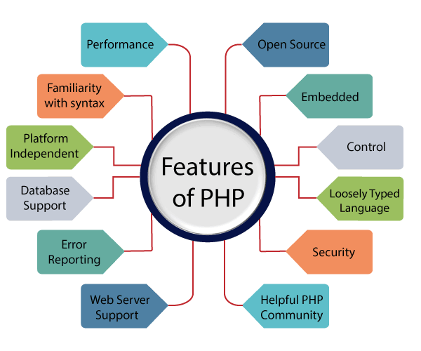

PHP Tutorial
PHP tutorial for beginners and professionals provides in-depth knowledge
of PHP scripting language. Our PHP tutorial will help you to learn PHP
scripting language easily.
This PHP tutorial covers all the topics of PHP such as introduction,
control statements, functions, array, string, file handling, form
handling, regular expression, date and time, object-oriented programming
in PHP, math, PHP MySQL, PHP with Ajax, PHP with jQuery and PHP with XML.
What is PHP
PHP is an open-source, interpreted, and object-oriented scripting language
that can be executed at the server-side. PHP is well suited for web
development. Therefore, it is used to develop web applications (an
application that executes on the server and generates the dynamic page.).
PHP was created by Rasmus Lerdorf in 1994 but appeared in the
market in 1995. PHP 7.4.0 is the latest version of PHP, which was released
on 28 November. Some important points need to be noticed about PHP are as
followed:
- PHP stands for Hypertext Preprocessor.
-
PHP is an interpreted language, i.e., there is no need for compilation.
-
PHP is faster than other scripting languages, for example, ASP and JSP.
-
PHP is a server-side scripting language, which is used to manage the
dynamic content of the website.
- PHP can be embedded into HTML.
- PHP is an object-oriented language.
- PHP is an open-source scripting language.
- PHP is simple and easy to learn language.
Why use PHP
PHP is a server-side scripting language, which is used to design the
dynamic web applications with MySQL database.
-
It handles dynamic content, database as well as session tracking for the
website.
- You can create sessions in PHP.
- It can access cookies variable and also set cookies.
- It helps to encrypt the data and apply validation.
-
PHP supports several protocols such as HTTP, POP3, SNMP, LDAP, IMAP, and
many more.
-
Using PHP language, you can control the user to access some pages of
your website.
-
As PHP is easy to install and set up, this is the main reason why PHP is
the best language to learn.
-
PHP can handle the forms, such as - collect the data from users using
forms, save it into the database, and return useful information to the
user. For example- Registration form.
PHP Features

PHP is very popular language because of its simplicity and open source.
There are some important features of PHP given below:
-
Performance: PHP script is executed much faster than those
scripts which are written in other languages such as JSP and ASP. PHP
uses its own memory, so the server workload and loading time is
automatically reduced, which results in faster processing speed and
better performance.
-
Open Source: PHP source code and software are freely available on
the web. You can develop all the versions of PHP according to your
requirement without paying any cost. All its components are free to
download and use.
-
Familiarity with syntax: PHP has easily understandable syntax.
Programmers are comfortable coding with it.
-
Embedded: PHP code can be easily embedded within HTML tags and
script.
-
Platform Independent: PHP is available for WINDOWS, MAC, LINUX &
UNIX operating system. A PHP application developed in one OS can be
easily executed in other OS also.
-
Database Support: PHP supports all the leading databases such as
MySQL, SQLite, ODBC, etc.
-
Error Reporting - PHP has predefined error reporting constants to
generate an error notice or warning at runtime. E.g., E_ERROR,
E_WARNING, E_STRICT, E_PARSE.
-
Loosely Typed Language: PHP allows us to use a variable without
declaring its datatype. It will be taken automatically at the time of
execution based on the type of data it contains on its value.
-
Web servers Support: PHP is compatible with almost all local
servers used today like Apache, Netscape, Microsoft IIS, etc.
-
Security: PHP is a secure language to develop the website. It
consists of multiple layers of security to prevent threads and malicious
attacks.
-
Control: Different programming languages require long script or
code, whereas PHP can do the same work in a few lines of code. It has
maximum control over the websites like you can make changes easily
whenever you want.
-
A Helpful PHP Community: It has a large community of developers
who regularly updates documentation, tutorials, online help, and FAQs.
Learning PHP from the communities is one of the significant benefits.
Audience
Our PHP tutorial is designed to help beginners and professionals. This PHP
tutorial will help those who are unaware about the concepts of PHP but
have basic knowledge of computer programming.
Problem
We assure you that you will not find any problem in this PHP tutorial. But
if there is any mistake or error, please post the error in the contact
form.